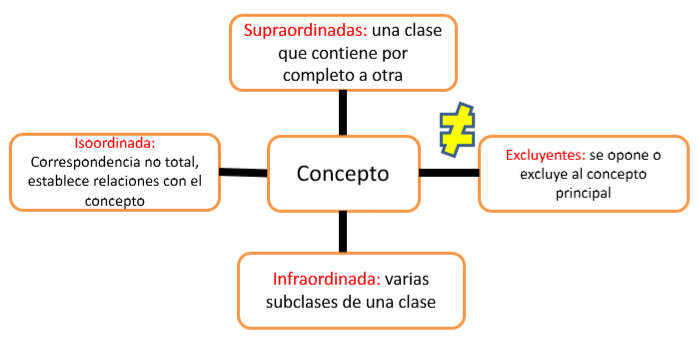

Una herramienta gráfica que nos permite aproximarnos a un texto son los mentefactos, los cuales nos ayudan a organizar y recordar los conocimientos e información por medio de un diagrama jerárquico en el que se hacen explícitas las ideas fundamentales, por ejemplo, sobre la “deep web”.
Los mentefactos nos permiten ilustrar la forma interna de los conceptos. Están constituidos por cuatro partes principales o proposiciones.